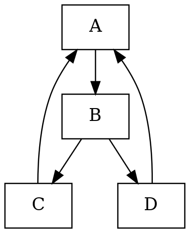
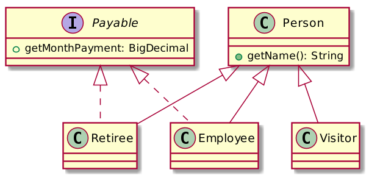
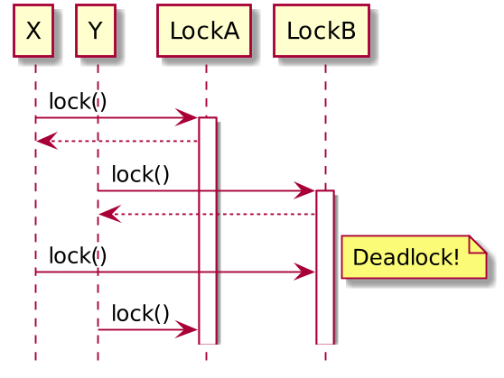

Презентация как код
Кто использует
PowerPoint, Keynote, LibreOffice Impress etc…?
Google slides?
Presentation as code frameworks?
LaTeX?
 | Иван Пономарёв
|
Какие презентации я делаю
конференционные доклады
университетские лекции
маркетинговые доклады для выставок
ad hoc слайдики для обсуждения технических тем с коллегами
Мой технологический выбор
Asciidoctor + RevealJS
IDEA+Asciidoctor plugin или AsciidocFX
Сборка Maven-скриптом на основе AsciiDoctorJ
Не единственный вариант — ищите свой стек!
Что мне нужно от технологии создания слайдов?
Совместная работа (включая, например, pull requests от студентов, предлагающих исправления неточностей)
Разделение контента и представления (шрифты, декоративные иллюстрации, CSS — на откуп дизайнерам)
CI / quality gates (валим сборку, если есть слово с опечаткой)
Поддержка разных языковых версий (русской / английской)
Что всем нужно от технологии создания слайдов?
Код
Диаграммы
Графики
Иногда формулы
Как это выглядит?
|
|
Таблицы и картинки
|
|

Код
| |
Диаграммы вида «квадратики со стрелочками» (GraphViz)
|  |
Диаграммы классов PlantUML
|  |
Диаграммы последовательностей PlantUML
|  |
Формулы (LaTeX-совместимые)
[stem]
++++
\int^{\infty}_{-\infty} e^{-x^{2}} = \sqrt{\pi}
++++Графики (gnuplot)
set term epslatex standalone size 18cm, 11cm
# fontscale 0.3
set output 'usl.tex'
set xlabel "{$N$}"
set ylabel "{$S$}"
set xrange [1:100]
set yrange [1:10]
set title "\\scalebox{2.0}{$S = \\frac{N}{1+\\alpha(N-1) + \\beta N (N-1)} =
\\frac{N}{1+(\\alpha + \\beta N) (N-1)} \\rightarrow 0$}"
#set grid xtics ytics
a = 1
f(x) = x / (1 + (a * 0.1 + b * 0.001 * x ) * (x-1) )Графики (gnuplot)
set label "\\colorbox{white}{$\\alpha = 0.1$}" at 10, 8.50 rotate by 0 front
set label "\\colorbox{white}{$\\beta = 0$}" at 70, 9.10 rotate by 5 front
set label "\\colorbox{white}{$\\beta = 0.001$}" at 70, 5.80 rotate by -10 front
set label "\\colorbox{white}{$\\beta = 0.002$}" at 70, 4.25 rotate by -9 front
set label "\\colorbox{white}{$\\beta = 0.003$}" at 70, 3.50 rotate by -9 front
set label "\\colorbox{white}{$\\beta = 0.004$}" at 70, 2.81 rotate by -8 front
set label "\\colorbox{white}{$\\beta = 0.005$}" at 70, 1.80 rotate by -5 front
unset key
# Plot
plot for [b=0:5] f(x) with lines linestyle b linewidth 3
unset output
!pdflatex usl.texГрафики (gnuplot)
Чем собираем?
Maven
GitHub CI
Публикация на Github Pages
А если нужен PDF?
Decktape!
node decktape.js -s 3200x1800 --slides 1-500 \
reveal "file:///index.html?fragments=true" slides.pdf
https://habr.com/ru/post/456032/
Спасибо за внимание!
@inponomarev